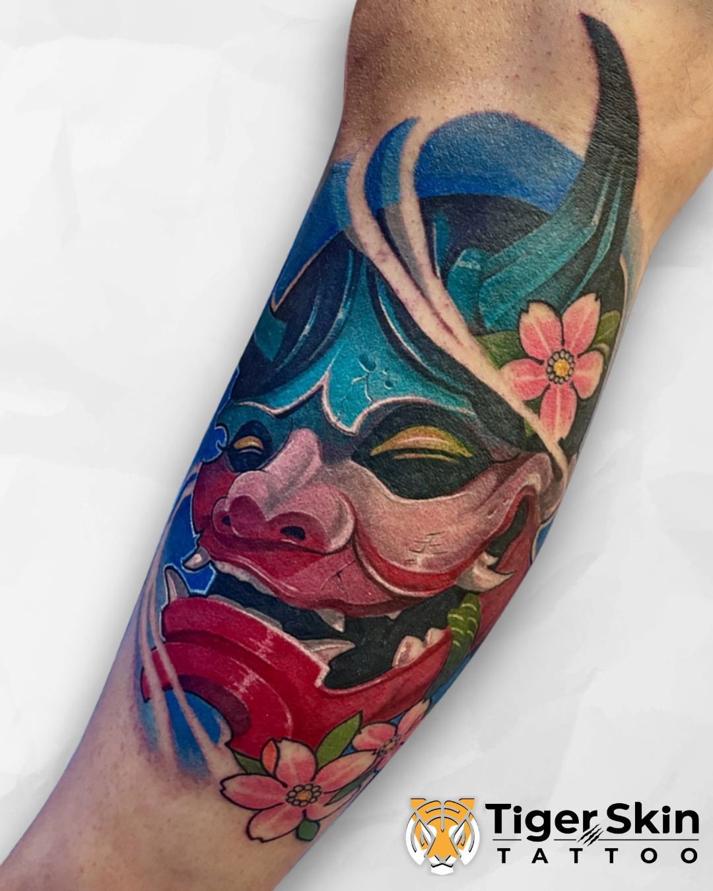
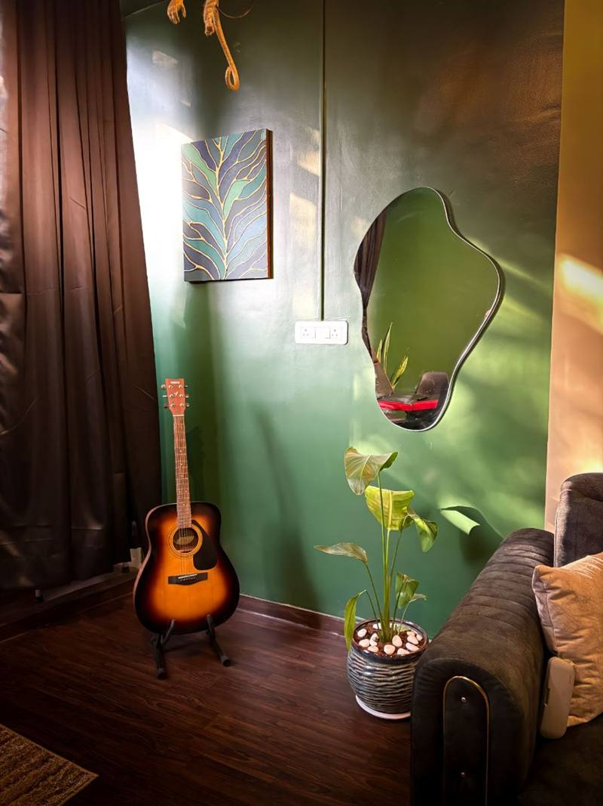
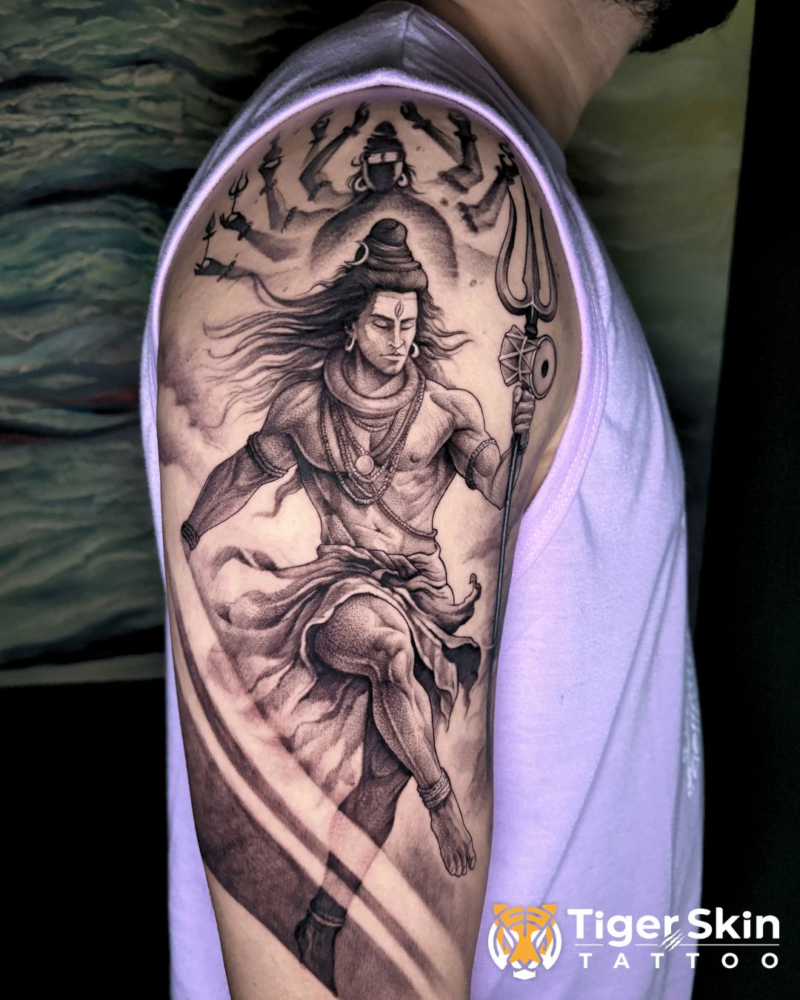

Tiger Skin Tattoos is Thane's most aesthetic tattoo studio — a calm, focused space where every session gets the artist's full attention. No tattoo is rushed here. You sit in comfort, and the colour work is done right.
Colour tattooing done well is one of the most striking things you can wear. It requires a different technique to black & grey — the layering of pigments, saturation control, and understanding how colour behaves on different skin tones all play a role in how long a colour tattoo stays vibrant.
At Tiger Skin Tattoos in Thane West, every colour piece is designed with Indian skin tones in mind. Lighter pigments that wash out on deeper skin, oversaturated palettes that blur early — these are mistakes that come from using Western techniques without adaptation. Swarain adjusts pigment choice, saturation and technique for each client's skin.
The result is a colour tattoo that looks bold on day one and holds for years.
Portraits, wildlife and detailed scenes rendered in full colour. Technically demanding — and incredibly striking when done right.
Bold outlines with rich, flat colour fills. This style ages the best of all colour work and suits a wide range of subject matter.
Ganesha, Mahadev, Durga — colour adds presence and devotional feeling to religious pieces. A popular choice for Thane clients.
Every colour piece below was custom-designed for the client wearing it.



Colour behaves differently on Indian skin tones. We choose pigments and saturation levels that work with your skin, not against it — so colour stays bold long-term.
Your colour tattoo is drawn from scratch. Colours chosen to complement your skin, placement planned, composition built for the body part it will live on.
Cheap colour work fades fast and muddies. We use quality pigments and proper layering technique so the colours age cleanly and stay readable for years.
Located in Naupada, Thane West — minutes from Thane railway station and easily reachable from Kopri, Khopat, Majiwada, Ghodbunder and across Thane district.
Colour tattoos at Tiger Skin Tattoos start from ₹2,000 for small pieces. Medium colour work (palm-sized, around 3×3 inches) starts from ₹8,000. Large colour pieces or full sleeves are quoted at consultation. Colour typically takes longer than equivalent black & grey work, so factor that into your budget. All quotes are free and come with no pressure.
All tattoos fade over time, but colour fades more noticeably than black & grey without proper care. The main factors are sun exposure, skincare routine, and the quality of the original work. We give you detailed aftercare instructions to maximise the lifespan of your colour piece, and we use quality pigments that hold well.
Yes — with the right technique and pigment choice. Light pastel colours don't show well on deeper skin tones, but bold, saturated colours, deep reds, blues, greens, and black-outlined colour work can look stunning. At Tiger Skin, we assess your skin tone in the consultation and advise on what will look best on you.
Keep it out of direct sunlight, especially in the first month. Use a good SPF when outdoors once healed. Keep the skin moisturised. Avoid swimming in chlorinated water while healing. We'll walk you through the full aftercare process after your session — read our aftercare guide for the full details.
We're in Naupada, Thane West — close to Thane railway station and easily reachable from Kopri, Khopat, Majiwada, Ghodbunder Road and across Thane district. By appointment only. Find us on Google Maps.
Tell us what you want — the design, the colours, the placement. Consultations are free. The fastest path is a call or WhatsApp.